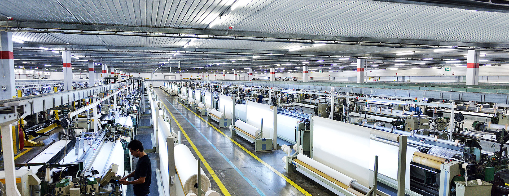

Home
Über Uns
Contact

2014
- Die Kapazitätserhöhung wurde mit zusätzlichen Investitionen erreicht.
- das erste Mal war eine geplante Produktion
von mercerisierter Maschine Girgin Tekstil in der Türkei.
2013
- Einführung der Single-Pass-Digitaldrucktechnologie
- Girgin Textile führte die weltweite Heimtextilindustrie in die
Single-Pass-Digitaldrucktechnologie ein,
- Die die Zukunft der Digitaldrucktechnologie darstellt.
2006
- Neue Kleiderfabrik wurde in Betrieb genommen.
- Neue Bekleidungsfabrik, die erweitert und
Modernisiert wurde, wurde in Betrieb genommen.
2000
- Die Garn- und Weberei hat ihre Investitionen in technologische
Maschinen im Rahmen der Modernisierung beschleunigt.
- Nach dem Jahr 2000 hat Girgin Textile seine Investitionen in technologische Maschinen
im Rahmen der Modernisierung der Garn- und Weberei beschleunigt.
- Die Investition, die im Jahr 2001 abgeschlossen sein soll,
soll eine Färbekapazität von 45.000 kg / Tag und 255.000 m / Tag erreichen.
| PRODUKTE |
PREIS |
|
BETTEN
ab 100€ |
|
BETTWÄSCHE
ab 30€ |
|
DECKEN
ab 50€ |
|
BETTDECKEN
ab 30€ |
|
VORHÄNGE
QM ab 10€ |
|
KISSEN
ab 15€ |